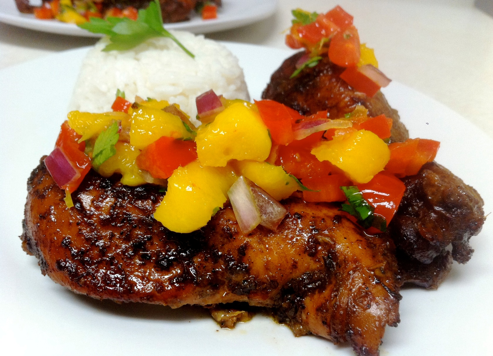
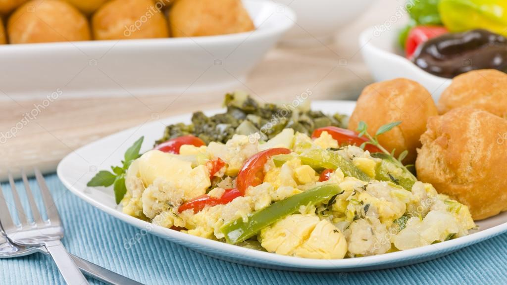
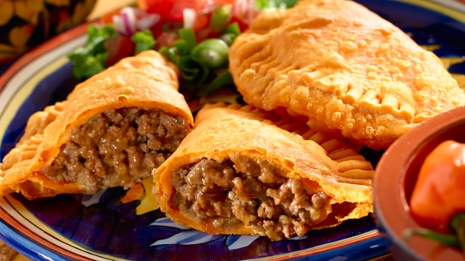

Hola bienvenidos al menu de platillos de Jamaica.
Platillo |
Imagen |
Informacion |
| 1-Pollo Jerk. |
 | Los jamaicanos utilizan una gran cantidad de especias, y la culminación de su potencial de fuego y sabrosa es salsa Jerk. Una mezcla de condimentos como pimientos Scotch Bonnet, pimiento, canela y nuez moscada están en la carne, que se mezcla durante horas, sobre la madera pimiento-frotado seco. Cualquier carne puede ser bruscamente, pero el pollo es el favorito, y el pollo jamaicano es diferente a cualquier que encontrarás en Europa. Los pollos criados en el Caribe se alimentan de alimentos cultivados localmente en lugar del típico grano importado, lo que resulta en un sabor deliciosamente rico. |
|
2-Ackee y pescado salado.
|  |
Al desayuno tradicional de Jamaica es difícil acostumbrarse, pero después de pasar algún tiempo en la isla, lo encontrarás verdaderamente adictivo. Parecido a los huevos revueltos, el plato es una combinación de bacalao y el fruto seso vegetal cultivado localmente: el Ackee. El sabor del Ackee es un tanto soso, pero dulce y contrasta con el pescado salado, que, cuando se combina con la cebolla y los pimientos, lo convierte en un plato delicioso. |
|
3-El jamaiquino Patty.
|
 |
Hay tantos tipos de empanadas en Jamaica como tipos de personas, y es por eso que no tendrás problema en encontrar un relleno favorito: las mejores empanadas son las de tipo casero. La empanada típica es un pastel salado con carne dentro, al igual que una empanada o una samosa, pero los condimentos son claramente jamaicano. Busca empanadas rellenas de langosta, carne de cerdo, pollo o incluso con ingredientes vegetarianos, todo ello con el aroma picante de curry y especias de la isla. Con un plato de acompañamiento, una sabrosa empanada puede hacer una comida. |